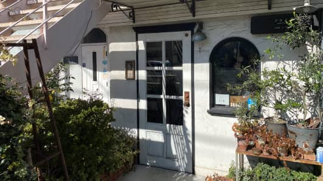

山科さんおすすめの川越の路地裏にある服と雑貨のお店「ソコノワ」
充実のバス便が自慢の川越市。写真は川越駅。
重要無形民俗文化財に指定されている、関東では数少ない山車の祭りである、川越まつり。（2020年はコロナ禍で中止）
川越の魅力、暮らしやすさ。
好史さん 川越は伝統があることは勿論なのですが、若い方が新しい文化をつくっている町のように思います。路地裏に入ると、アンティーク店、飲食店、洋服店、花屋等、若い方が運営をされているお店が多くあり、川越の町を盛り上げようとしています。裏原宿を裏原と呼ぶように、裏川、と呼ぶ方もいらっしゃいますね。
山科さんおすすめの川越の路地裏にある服と雑貨のお店「ソコノワ」
通子さん 川越は、都内とは違い、庭がある家も多く、のびのびと暮らせる場所だと思います。川越の中心から離れると田んぼや、川もあるので、子育てをするのにも良い環境ですし、もちろん都心への通勤もしやすいと思います。また、関越自動車道川越インターもあり、どのエリアに住んでもアクセスしやすいと思います。
また、私は元々川越出身で、関越自動車道にほど近い場所に住んでいましたが、音が気になることはありませんでした。この辺りは住宅が増えている印象がありますが、のどかで、落ち着いて暮らせる環境だと思います。
好史さん どんなエリアでも駅チカ物件は高い傾向がありますが、川越は特にバス便が充実していますし、少し離れた場所であれば家の選択肢も広がりますよね。あと、川越の人は本当に川越を愛しています。川越まつりが始まる一週間位前になると、みんなそわそわしだして、お祭りの話しかしなくなる気がします（笑）
充実のバス便が自慢の川越市。写真は川越駅。
通子さん 私も子どもの頃から川越まつりは毎年行っていましたし、昔はお祭りが平日に開催したこともあったので、学校も早く終わったりしていたんですよ（笑）。今年はコロナ禍で開催できないようなので残念ですね。
伝統があって、都会過ぎず、田舎過ぎず、丁度良い感じが川越の魅力です。とても住みやすい町ですよ。
重要無形民俗文化財に指定されている、関東では数少ない山車の祭りである、川越まつり。（2020年はコロナ禍で中止）
2010年6月、坂戸市でブランドRestive Horse Groundを立ち上げる。2014年、川越にてリニューアルオープン。翌2015年10月から、モノをつくる喜びをもっと楽しんでほしいという想いで革教室をスタートさせる。革への造詣、デザインセンス、穏やかな人柄が魅力。
YouTubeにてチャンネル「ネトラポートch」を2019年11月に開設。様々な革製品のハウツー動画をアップしている。コメントの中には「母の誕生日プレゼントに作らせて頂きました。泣いて喜んでもらいました！これからの動画も楽しみにさせて頂きます。」など、喜びの声が寄せられている。